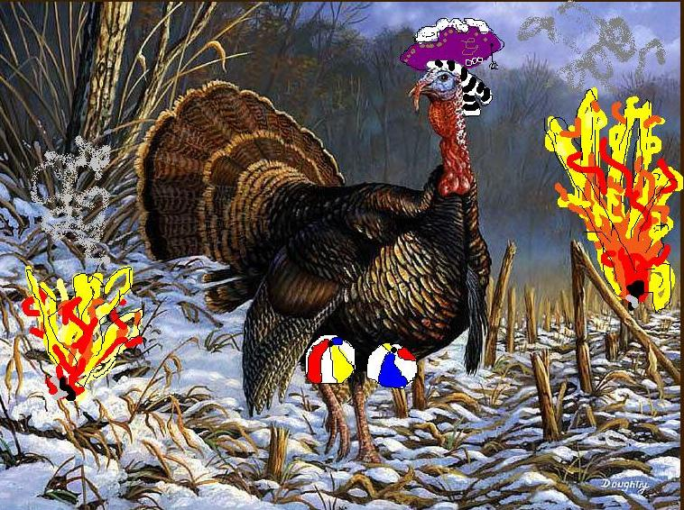

The first Turkey who made it to America
-Gobbley de Basco was a giant turkey
-He hailed from Portugal and had gonads that were the size of gigantic beach volleyballs!
-When he arrived in America, he killed 230 Indians in the first day alone!
-Some say Gobbley de Basco was more of a god than a turkey
-When he stepped on American Land he sang a beutiful song, and did a mating dance with all of the female turkeys that had arrived along with him (this made Gobley de Basco extremely tired)
-Gobley de Basco was extrodinarily good at creating fire
-His favorite hobby was to light Indian's cock shafts on fire (he sang and did a mating dance after doing this as well)
-Gobley de Basco is gone, but in America we set apart one day each year to commemorate this brave and large turkey, and that holiday is thanksgiving.